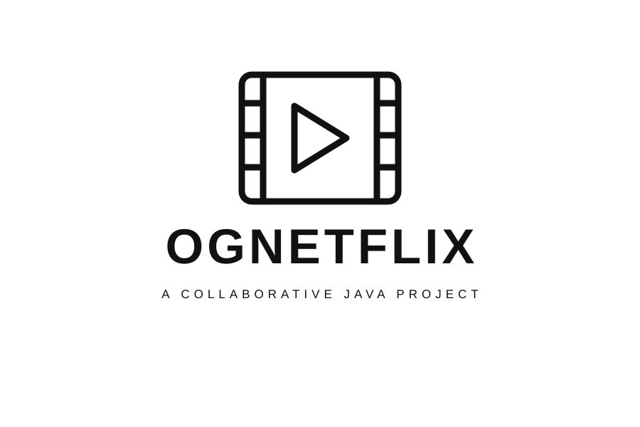

Independent studio · Puerto Rico
Polo Studios
Thoughtful design. Purposeful technology.
Software, web applications & AI. Built with curiosity. Made to explore.
Independent studio · Puerto Rico
Thoughtful design. Purposeful technology.
Software, web applications & AI. Built with curiosity. Made to explore.
The studio
Polo Studios is an independent technology studio based in Puerto Rico, founded by Miguel A. De Jesus, a computer engineering student with a focus on software development, web applications, and artificial intelligence. The studio brings together technical learning, creative interests, and a drive to build useful digital products.
Our ideas start with curiosity: how can technology make a task easier, help someone discover something new, or turn a personal interest into an experience worth sharing? Through projects in web development, computer vision, and embedded systems, we explore those questions and develop the skills to bring concepts to life.
Fragrances, sneakers, and gaming influence the studio’s perspective—from its visual identity to future product ideas. Fragrance Library, our live collection and discovery app, is one example of that connection. Rooted in Puerto Rico, Polo Studios aims to contribute to the island’s technology community while creating products that can reach people anywhere.
Selected work
 Live · Early version
Live · Early versionDiscover fragrances, build a private collection and wishlist, and track replacement value from matching seller offers.
Explore the project → Demo
DemoA Java and MySQL web application with product management, shopping carts, order processing, and role-based access.
Explore the project → Demo
DemoA playable casino simulation with blackjack, slots, High / Low dice, a virtual bank, balance validation, and transaction history. Includes a Java console version.
Explore the project → In development · Midterm design stage
In development · Midterm design stageCreators: Miguel A. de Jesús Rosa & Ricardo J. Lopez Ortiz
Facial Recognition Attendance System. An in-development senior design project for camera-based classroom attendance, with professor review, administrator tools, and hardware options under evaluation.
Explore the development plan → Live
LiveA conversational guide to the whole studio. Discover projects, ask how their features work, and open the apps, source code, and design documents.
Instant site search is ready immediately. Optional AI search matches questions by meaning using an on-device model. Answers link to public project information.
Created and published: October 22, 2026.
Status: Live.

Academic projectA Java/JSP movie rental application with customer queues, rental tracking, and administrator tools.
Collaborators: Miguel A. De Jesus & Ricardo J. Lopez Ortiz.
Our focus
Starting with fragrances, style, and the everyday things worth collecting, exploring, and understanding.
Turning those ideas into websites and applications, with clear information and thoughtful interfaces.
Exploring AI, computer vision, and engineering alongside products inspired by personal interests.
Based in Puerto Rico
Polo Studios starts in Puerto Rico, with a personal perspective and the ambition to build products people can use anywhere.
Learning, experimentation, and practical engineering guide the work—from an early concept to a working application.
Connect with Polo Studios